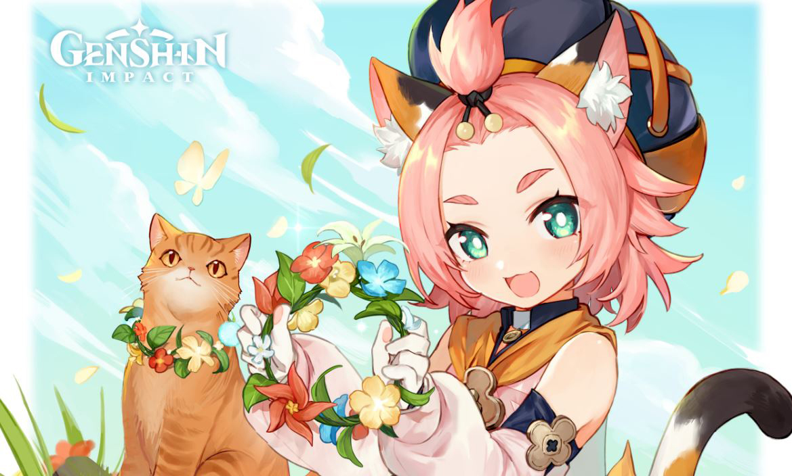
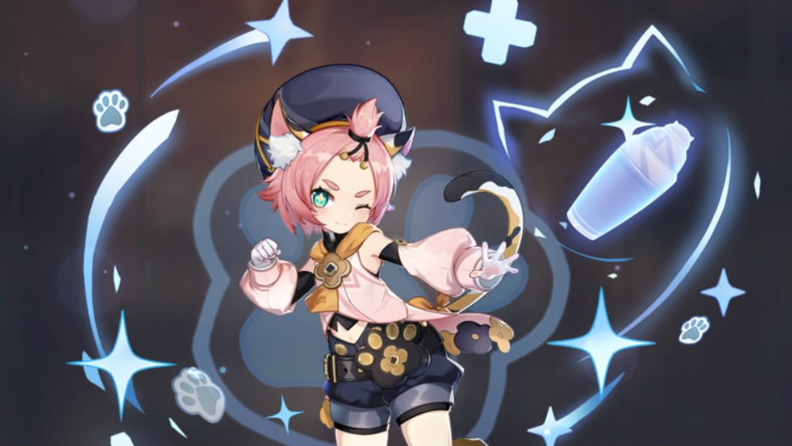

Diona Guide
Diona is a Cryo Bow Character that specializes as a Support.
Overview
Diona is popular because of her mixed support abilities. She is able to provide both a strong shield and a high amount of healing, while debuffing the enemy.

Fires an Icy Paw that deals Cryo DMG to opponents and forms a shield on hit. The shield’s DMG Absorption scales are based on Diona’s Max HP, and its duration scales off the number of Icy Paws that hit their target.
Elemental Skill: Icy Paws
Fires an Icy Paw that deals Cryo DMG to opponents and forms a shield on hit. The shield’s DMG Absorption scales are based on Diona’s Max HP, and its duration scales off the number of Icy Paws that hit their target.
Press: Rapidly fires off 2 Icy Paws.
Hold:Dashes back quickly before firing five Icy Paws. The shield created by a Hold attack will gain a 75% DMG Absorption Bonus.
This skill is very useful for throwing out Cryo damage quickly and generates the second best shield in the game. Using the hold version is optimal, and can also be used to funnel particles to another character.
Elemental Burst: Signature Mix
Tosses out a special cold brew that deals AoE Cryo DMG and creates a Drunken Mist in an AoE. Deals continuous Cryo DMG to opponents within the AoE. Continuously regenerates the HP of characters within the AoE.
It is highly recommended for players to level Diona’s Burst up alongside her Skill until at least Level 6, which is a relatively cheap investment. After that, you can level her Burst up further if you find her healing to be lacking. Additionally, unlike Jean or Bennett, Diona will aim her Burst towards an enemy rather than cast it right underneath her. As a result, players should expect to have to move towards the enemy if they wish to be healed.
Constellations
C1: A Lingering Flavor
Reduces Burst cost, which is always a good thing. Solid constellation.
C2: Shaken, Not Purred
While the damage increase is insignificant, the buffs to Diona’s shields are fairly useful. This constellation is primarily co-op oriented, allowing you to provide all your co-op teammates with a shield identical in utility to your own
C3: A—Another Round?
+3 to her Burst. Great healing increase, but not much else.
C4: Wine Industry Slayer
Diona's worst constellation. Completely useless unless you want to do a meme build with a Main DPS Diona.
C5: Double Shot, On The Rocks
+3 to her Skill. Minor increase, but still good.
C6: Cat’s Tail Closing Time
This is her best. It provides a good damage increase for reaction-based teams and is useful for 1 shot Damage per Screenshot comps. This is not functional for characters who want to be below 50% HP such as Hu Tao.
Teams
Diona is an incredible support. She works the best on Cryo teams who need a battery, but can also work on Melt teams.
Diona + Rosaria + Xingqiu
Diona + Eula + Raiden


Diona + Diluc + Sucrose
Diona + Shenhe + Mona